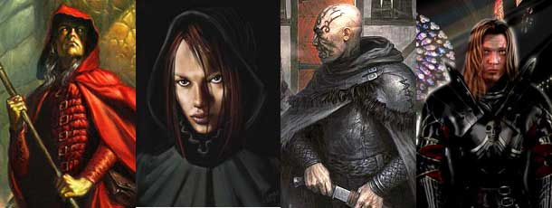
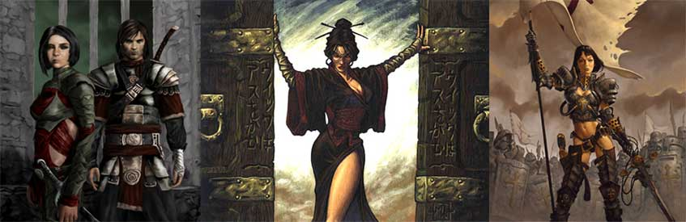
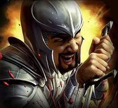

|
PUNTEGGI MINIMI E MASSIMI RAZZIALI PER LE ABILITÀ |
||
| ABILITÀ | MINIMO | MASSIMO |
| Forza | 4 | 18 |
| Intelligenza | 5 | 18 |
| Saggezza | 4 | 18 |
| Costituzione | 3 | 18 |
| Carisma | 3 | 18 |
| Destrezza | 4 | 18 |
|
ABILITÀ DEI LADRI |
PUNTEGGIO INIZIALE |
| Pick Pocket | 17 % |
| Open Lock | 10 % |
| Find/Rem. Trap | 5 % |
| Move Silently | 12 % |
| Hide in Shadows | 7 % |
| Detect Noise | 15 % |
| Climb Wall | 60 % |
| Read Languages | 0 % |
| FATTORE MOVIMENTO BASE | 8 esagoni |
| SENTIRE RUMORI | 15 % |
|
DIMENSIONI E PESO |
SISTEMA DI CALCOLO DELL'ALTEZZA E DEL PESO |
| Altezza del maschio | 134 cm. + 3 cm. per punto di costituzione + 2d10 cm. |
| Altezza della femmina | 120 cm. + 3 cm. per punto di costituzione + 2d10 cm. |
| Peso del maschio | 60 kg. + 2 kg. per punto di costituzione + 1d6 kg. |
| Peso della femmina | 50 kg. + 2 kg. per punto di costituzione + 1d6 kg. |
|
CATEGORIA DI ETÀ |
ANNI |
| Starting Age | 15 + 1d4 |
| Childhood | 0 - 15 |
| Adolescence | 16 - 29 |
| Adulthood | 30 - 44 |
| Middle Age* | 45 - 59 |
| Old Age** | 60 - 89 |
| Venerable Age*** | 90 + |
| Maximum Age | 90 + 2d20 |
* Middle Age: I
personaggi di questa categoria di età perdono 1 punto di forza ed 1 punto di
costituzione, acquisiscono però 1 punto di intelligenza ed 1 punto di saggezza
(non potendo, in ogni caso, superare i massimi razziali).
** Old Age: I personaggi di questa categoria di età perdono 2 punti di
destrezza, 2 ulteriori punti di forza ed 1 ulteriore punto di costituzione,
acquisiscono però 1 ulteriore punto di saggezza (non potendo, in ogni caso,
superare i massimi razziali).
*** Venerable Age: I personaggi di questa categoria di età perdono 1
ulteriore punto di destrezza, di forza e di costituzione, acquisiscono però 1
ulteriore punto di intelligenza e di saggezza (non potendo, in ogni caso,
superare i massimi razziali).

| NOME | Carattere Crudele |
| COSTO IN PUNTI CREAZIONE | 1 |
| REQUISITO PARTICOLARE | ALLINEAMENTO MALVAGIO (EVIL) |
| DESCRIZIONE |
Alcuni Pergariani
hanno un carattere estremamente crudele essendo naturalmente portati per
le azioni malvagie.
Costoro ricevono i
seguenti benefici: |
| NOME | Tradizione nell'uso della Spada Bastarda |
| COSTO IN PUNTI CREAZIONE | 2 |
| REQUISITO PARTICOLARE | NESSUNO |
| DESCRIZIONE |
I Pergariani hanno una
lunghissima tradizione nell'uso della spada bastarda come arma da
combattimento. In particolare, costoro amano la versatilità di tale arma
che può essere utilizzata sia combattendo ad una mano che a due mani
ottenendo il seguente beneficio: |
| NOME | Personalità Dispotica |
| COSTO IN PUNTI CREAZIONE | 2 |
| REQUISITO PARTICOLARE | PUNTEGGIO IN CARISMA ALMENO PARI A 9 |
| DESCRIZIONE |
Alcuni Pergariani
hanno una personalità dispotica essendo naturalmente inclini al comando
ed alla prevaricazione. Costoro ricevono i seguenti benefici: |
| NOME | Carattere Violento |
| COSTO IN PUNTI CREAZIONE | 2 |
| REQUISITO PARTICOLARE | PUNTEGGIO IN FORZA ALMENO PARI A 12 |
| DESCRIZIONE |
Alcuni Pergariani
hanno una personalità particolarmente
violenta e brutale. Per tale motivo costoro ricevono i seguenti
benefici: |
| NOME | Inclinazione ad Uccidere |
| COSTO IN PUNTI CREAZIONE | 3 |
| REQUISITO PARTICOLARE | ALLINEAMENTO MALVAGIO (EVIL) |
|
DESCRIZIONE  |
Alcuni Pergariani sono
contraddistinti da tale malvagità da risultare insensibili alla vita
altrui. Per tale motivo costoro ricevono i seguenti benefici:
|
| NOME | Predisposizione alla Disciplina |
| COSTO IN PUNTI CREAZIONE | 3 |
| REQUISITO PARTICOLARE | ALLINEAMENTO LEGALE (LAWFUL) |
| DESCRIZIONE |
Alcuni Pergariani sono
naturalmente inclini alla disciplina ed all'obbedienza. In particolare
essendo ostinati e rispettosi dei loro compiti sono difficili da
condizionare ed in caso di difficoltà dimostrano maggiore resistenza,
per tale motivo costoro ricevono i seguenti benefici:
|